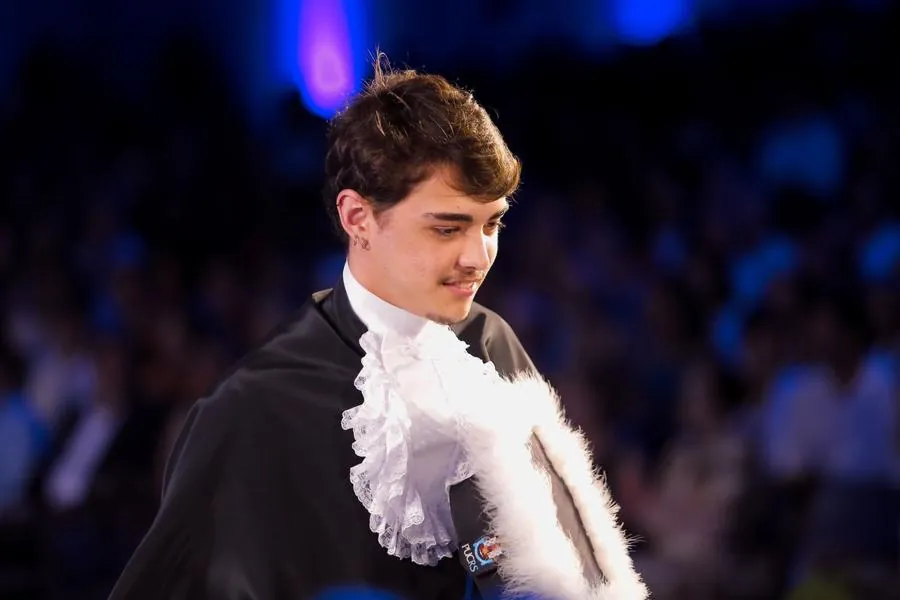

Direção de arte da comunicação oficial da cidade: serviços do 156, educação, limpeza urbana, praças, acesso à informação e datas importantes de Porto Alegre. Uma linguagem consistente para falar com mais de um milhão de pessoas.
Antônio Meneghetti, designer e diretor de arte
Design que comunica.
Da identidade visual ao anúncio que vende, com a ideia e a peça final no mesmo lugar.
Passe o mouse para misturar as cores
Sobre mim.
Onde design, marketing e estratégia se encontram.

Oi, eu sou o Antônio.
Comecei como freelancer em 2017 e, desde então, passei por estúdio, agências, educação e governo. Liderei equipes como designer chefe, fui o único designer de uma escola inteira e hoje assino a direção de arte da comunicação de Porto Alegre.
O contato constante com marcas, startups e projetos reais me levou além do design, para dentro do marketing e da publicidade: narrativa, posicionamento, ganchos de venda e performance de campanha.
Design de ProdutoPUCRS, concluído em 2025
Fluência nativa em inglêsCertificado Cambridge English First
Trabalhos selecionados.
Toque em um projeto para ver as peças.
+250Kviews mensais
Projeto conceitual e autoral baseado em Porto Alegre, movido pela divulgação e colaboração em eventos na cidade. @plagio.zip
Campanha de divulgação dos museus dos dois clubes da cidade, feita em parceria com a Prefeitura. O desafio foi dar a cada um a própria personalidade sem quebrar a linguagem da campanha.
Peças da reta final de inscrições da Maratona Internacional de Porto Alegre, em parceria com a Olympikus.
Identidade e aplicações para uma linha de cosméticos, das embalagens às peças de divulgação.
Conteúdo e anúncios para uma empresa especializada em vans e utilitários, com foco em serviço, confiança e conversão.
Carrosséis e posts de conteúdo sobre negócios e marketing, com ganchos fortes para parar a rolagem.
Marcas e instituições com quem já trabalhei
- RenauxView
- Prefeitura de Porto Alegre
- Olympikus
- 156 Porto Alegre
- Museu do Inter
- Museu do Grêmio
- Maratona Internacional de Porto Alegre
- Cultura DAB
- BrainWeek
- Câmara Municipal de Porto Alegre
- Plagio.zip
- Claire Fancin Cosméticos
- Pro Mais Vans
- BTE Grupo
- All Education
- Schaeffer Digital
- Modulo Marketing
- Nave Comunica
- 2700 studios
O que eu faço.
Cada peça existe para informar, engajar ou vender. E a marca sai mais forte no final.
Direção de arte
Design gráfico
Identidade visual e branding
Social media
Campanhas e anúncios
Copywriting estratégico
Vídeos, reels e VSL
UX design
Design de embalagem
Design gastronômico
Feito com Illustrator, Photoshop, Cinema 4D, Canva, AutoCAD 3D e Autodesk.
Experiência.
Desde 2017, entre estúdio, agência, educação e governo.
No Gabinete de Comunicação Social, liderei a execução da comunicação visual da cidade. O trabalho recebeu um prêmio nacional na categoria Identidade.
No gabinete de vereadores, conduzi a comunicação política direta: relacionamento, gestão de crise, design, captação em agenda e edição de vídeo. Vivi uma campanha política completa, do planejamento à rua.
Único designer da empresa, responsável pela estratégia e execução da comunicação visual. Criei narrativas, posicionamento e ganchos para lives de lançamento, e cuidei de toda a identidade, anúncios e captação da escola botânica @elmundodemusgo.
Papel estratégico entre design, direção criativa e gestão de projetos. Conduzi projetos de grande porte do planejamento à entrega final, incluindo marcas como a RenauxView, maior empresa do setor.
Planejamento e criação de conteúdo para redes sociais de clientes da agência.
Criação de peças gráficas e digitais para clientes da agência.
Seis anos atendendo marcas e projetos como freelancer, onde construí a base de design gráfico, embalagem e social media.
Prêmio nacional, 2026
Categoria Identidade, Social MediaGov.
Com a Prefeitura de Porto Alegre, ajudei a construir uma comunicação estruturada para a cidade inteira. O trabalho foi reconhecido nacionalmente.
Vamos criar algo juntos.
Me conta do seu projeto. Ou escreva direto para meneghettitom@gmail.com.